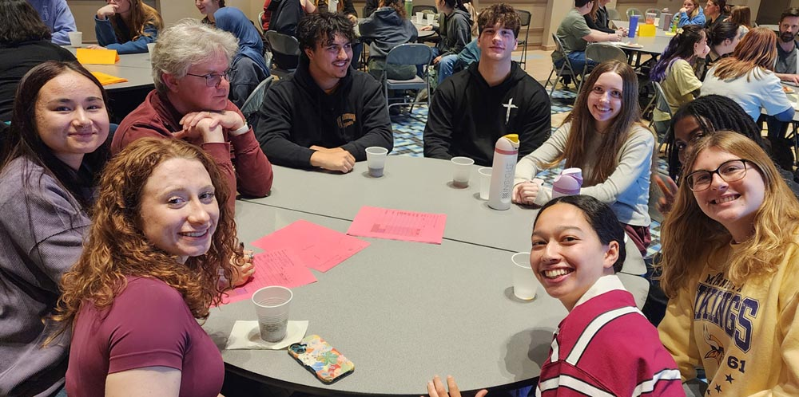

November 9, 2026
Biochemistry Mentoring Program Trivia Night victory
Our team managed to pull ahead for a trivia night win! Julien's team was a close second.. Congratulations to everyone, including lab members Eva and Arwyn!


We are located in the Roy J. Carver Department of Biochemistry, Biophysics & Molecular Biology at Iowa State University.

November 9, 2026
Our team managed to pull ahead for a trivia night win! Julien's team was a close second.. Congratulations to everyone, including lab members Eva and Arwyn!

November 4, 2026
We're excited to see the mechanistic study of Src and Pyk2 reciprocal regulation is now out at the Journal of Biological Chemistry!
https://doi.org/10.1016/j.jbc.2026.113737

October 1, 2026
Dr. Alexzandrea and Dr. Tania are both distinguishing themselves in the biotechnology industry, winning 2026 CASSS awards in Mass Spec and CE Pharm, respectively! Congratulations to both!